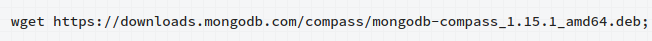
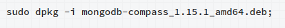
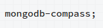

<!DOCTYPE html>
<html lang="en">
<head>
  <meta charset="UTF-8">
  <meta name="viewport" content="width=device-width, initial-scale=1.0">
  <meta http-equiv="X-UA-Compatible" content="ie=edge">
  <title>Document</title>
  <link href="https://fonts.googleapis.com/css?family=Amatic+SC|Comfortaa|Gamja+Flower|Indie+Flower|Josefin+Sans|Kosugi+Maru|Merienda|Noto+Serif+JP|Joti+One|Macondo|Montserrat|Open+Sans+Condensed:300" rel="stylesheet">
<script src="https://ajax.googleapis.com/ajax/libs/jquery/3.3.1/jquery.min.js"></script>
<link rel="stylesheet" href="https://maxcdn.bootstrapcdn.com/bootstrap/4.0.0/css/bootstrap.min.css">
    <link rel="stylesheet" type="text/css" href="../css/vm.css">
<script src="js/animated.js"></script>
</head>
<body>

</body>
</html>


<div id="master">
  <div id="header">
    <div style="float: left; padding: 150px; font-family: 'Macondo', cursive;">
      <h4>Created by Michael C</h4>
      <h5>Last Edited on 11/27/18</h5>
      <h3><a href="../index.html">Back to main Page</a></h3>

    </div>
    <div style="float: right; padding: 50px; padding-top: 150px">
      <h2>How I installed Compass for MongoDB </h2>
</div>
</div>
<div id="main2" style="padding: 0px;">
  <table border="1" style="border: 1px;text-align: center;width: 100%; border-style: ridge;font-size: 16px;font-family: 'Montserrat', sans-serif;">
    <tr>
      <td>First, I had to get the repository where Compass is located</td>
      <td></td>
    </tr>
    <tr>
      <td>Then I used the repository to install Compass</td>
      <td></td>
    </tr>
    <tr>
      <td>Finally, I use this command to run Compass</td>
      <td></td>
    </tr>

  </table>
</div>
